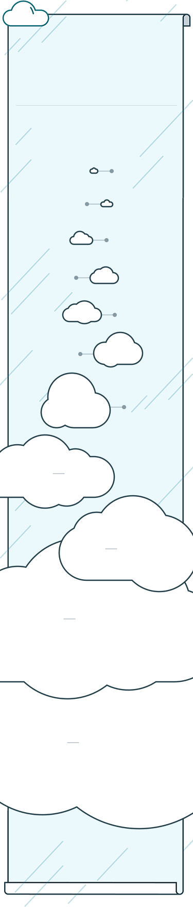

你的全年辐射值
3.85
msv
辐射剂量典型值
默认单位（msv/年）
深度屏蔽的
实验室剂量
0.01
全球核燃料后处理
引起的增加剂量
0.022
胸透（msv/次）
核电厂周边
0.05
长途飞机旅行
(msv/万公里)
0.2
肠道x射线检查
0.6
公众的剂量限值
1
全球平均
天然本底
2.4
胸腔CT检查
6.9
巴西瓜拉帕里的
天然本底
10
职业人员的剂量限值
50
抢险人员剂量限值
250
分享给好友
辐射源
宇宙源
乘坐飞机主要的辐射源为宇宙电离辐射。目前还未证实多次坐飞机会对身体有害。
氡气
主要来自土壤和地下。地铁与地下作业，都可能受到氡的轻微影响。
吸烟
乘坐飞机主要的辐射源为宇宙电离辐射。目前还未证实多次坐飞机会对身体有害。
吸烟
乘坐飞机主要的辐射源为宇宙电离辐射。目前还未证实多次坐飞机会对身体有害。